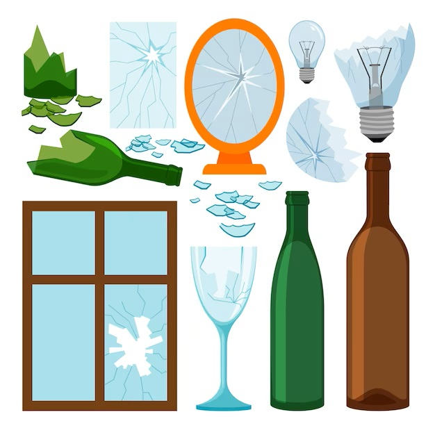

Tipos de reciclaje segun los materiales basicos
- Reciclaje de plásticos, latas y bricks.
- Reciclaje de papel y cartón.
- Reciclaje de vidrio. 
- Reciclaje de restos de alimentos.
- Reciclaje de objetos no reciclables.


A lo largo de los años hemos podido identificar el gran consumo innecesario de productos que contiene materiales que al ser desechados de forma incorrecta generan contaminacion, estos a su vez si se utilizaran de forma adecuada se podrian aprovechar de formas muy favorables para el medio ambiente y la economia de un pais, por este motivo el dar una prioridad a la correcta seleccion y clasificacion de los desechos diarios puede ser el aporte que cada uno podemos braindar al medio ambiente.
| COLOMBIA | % De desechos reciclados 70% | Fila 1 - Columna 3 |
| ARGENTINA | % De desechos reciclados 70% | Fila 2 - Columna 3 |
| VENEZUELA | % De desechos reciclados 70% | Fila 3 - Columna 3 |